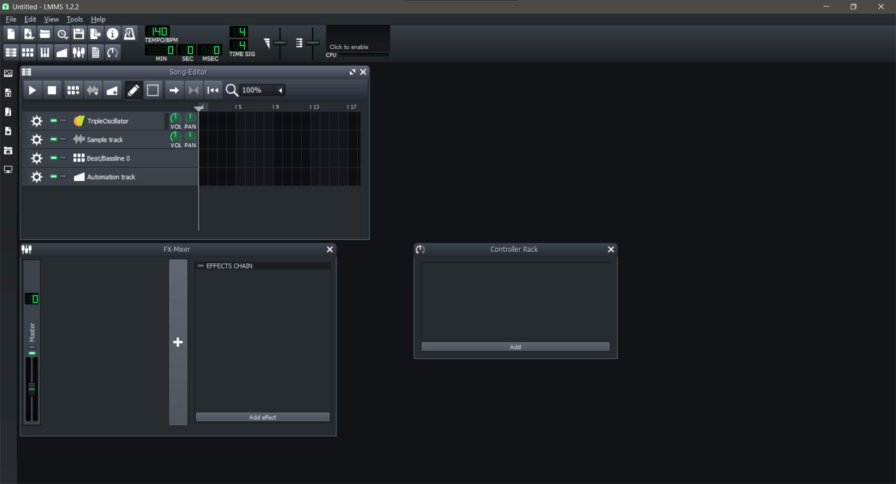

Instalación y descarga
Apoyándonos en la herramienta de portable apps, nos podemos encontrar con una serie de pogramas muy interesantes que nos ayudan para desarrollar efectos especiales de audio, Uno es Audacity y el otro es LMMS.
Vamos a usar LMSS en portable
